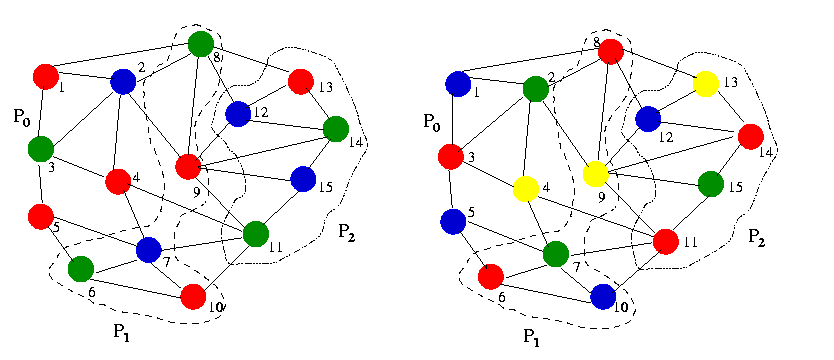
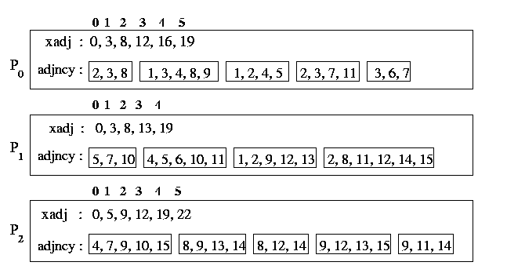
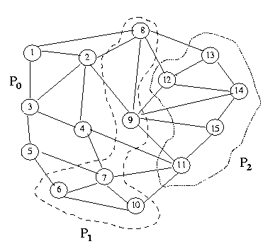
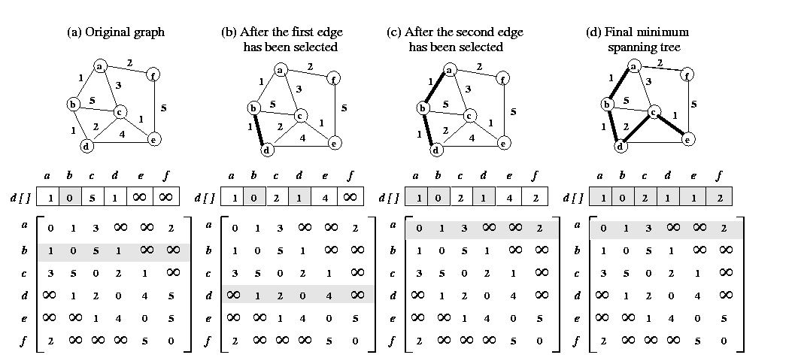
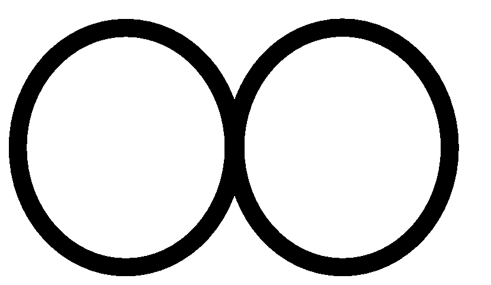

hyPACK-2013 Mode 1 :Non-Numerical Computations MPI Lib. Calls
|
Module 7 : MPI programs on Dense Matrix Computations -
Parallel Programs on simple algorithms for Graph theory computations, Coloring a graph,
and sorting
and execute on Message Passing Cluster or Multi-Core Systems that support
MPI library. |
Example 7.1
|
Write MPI program for implementation of Sample Sorting Algorithm
|
Example 7.2
|
Write Simple MPI program for implementation of coloring a sparse graph.(Assignment)
|
Example 7.3
|
Write an efficient MPI program for implementation of coloring a sparse graph.(Assignment)
|
Example 7.4
|
Efficient Parallel formulation for implementation Dijkstra's Single source shortest path Algorithm .(Assignment)
|
| |
|
(Source - References :
Books
Multi-threading
-
[MC-MPI-02], [MCMPI-06], [MCMPI-07], [MCMPI-09], [MC-MPI10], [MCMPI-11],
[MCMTh-12],[MCBW-44], [MCOMP-01])
|
Example 7.1:
|
Write MPI program to implement Sample Sorting Algorithm
(Download source code :
mpic-samplesort.c )
|
Objective
Write a MPI program to sort n integers, using sample sort
algorithm on a p processor of MPI cluster. Assume n is
multiple of p.
Description
There are many sorting algorithms which can be parallelised on various
architectures. Some sorting algorithms (bitonic sort, bubble sort, odd-even
transposition algorithm, shellsort, quicksort) are based on compare-exchange
operations. There are other sorting algorithms such as enumeration sort,
bucket sort, sample sort that are important both practically and theoretically.
First, we explain bucket sort algorithm and we use concepts of bucket sort
in sample sort algorithm.
Sequential and parallel bucket sort algorithms
Bucket sort assumes that n elements to be sorted
are uniformly distributed over an interval (a, b). This algorithm
is usually called bucket sort and operates as below.
The interval (a,b) is divided into m equal sized subintervals
referred to as buckets . Each element is placed in the appropriate
bucket. Since the n elements are uniformly distributed over the
interval (a,b), the number of elements in each bucket is roughly
n/m. The algorithm then sorts the elements in each buckets, yielding
a sorted sequence.
Parallelizing bucket sort is straightforward. Let n be
the number of elements to be sorted and p be the number of processes.
Initially, each process is assigned a block of n/p elements, and
the number of buckets is selected to be m=p. The parallel
formulation of bucket sort consists of three steps.
In the first step, each process partitions its block of n/p
elements into p subblocks on for each of the p buckets. This
is possible because each process knows the interval [a,b] and
thus the interval for each bucket.
In the second step, each process sends subblocks to the appropriate
processes. After this step, each process has only the elements belonging
to the bucket assigned to it.
In the third step, each process sorts its bucket internally
by using an optimal sequential sorting algorithm.
The performance of bucket sort is better than most of the
algorithms and it is a good choice if input elements are uniformly
distributed over a known interval.
Sequential and parallel sample sort algorithms
Sample sort algorithm is an improvement over the basic bucket
sort algorithm. The bucket sort algorithm presented above
requires the input to be uniformly distributed over an interval [a,b].
However, in many cases, the input may not have such a distribution or its
distribution may be unknown. Thus, using bucket sort may result in buckets
that have a significantly different number of elements, thereby degrading
performance. In such situations, an algorithm called sample sort will
yield significantly better performance.
The idea behind sample sort is simple. A sample of size s
is selected from the n-element sequence, and the range of the buckets
is determined by sorting the sample and choosing m-1 elements
from the results. These elements (called splitters) divide the sample into
m equal sized buckets. After defining the buckets, the algorithm
proceeds in the same way as bucket sort . The performance of sample
sort depends on the sample size s and the way it is selected
from the n-element sequence.
How can we parallelize the splitter selection scheme? Let p be
the number of processes. As in bucket sort , set m =p; thus,
at the end of the algorithm, each process contains only the elements
belonging to a single bucket. Each process is assigned a block of n/p
elements, which it sorts sequentially. It then chooses p-1 evenly
spaced elements from the sorted block. Each process sends its p-1
sample elements to one process say Po. Process Po
then sequentially sorts the p(p-1) sample elements and selects
the p-1 splitters. Finally, process Po broadcasts
the p-1 splitters to all the other processes. Now the algorithm
proceeds in a manner identical to that of bucket sort . The sample
sort algorithm has got three main phases. These are:
1. Partitioning of the input data and local sort :
The first step of sample sort is to partition the data. Initially,
each one of the p processes stores n/p elements of the sequence
of the elements to be sorted. Let Ai be the sequence stored at process
Pi. In the first phase each process sorts the local
n/p elements using a serial sorting algorithm. (You can use C
library qsort() for performing this local sort).
2. Choosing the Splitters :
The second phase of the algorithm determines the p-1
splitter elements S. This is done as follows. Each process
Pi selects p-1 equally spaced elements from the
locally sorted sequence Ai. These p-1 elements
from these p(p-1) elements are selected to be the splitters.
3.Completing the sort :
In the third phase, each process Pi uses
the splitters to partition the local sequence Ai into
p subsequences Ai,j such that for 0 <=j
< p-1 all the elements in Ai,j are smaller
than Sj , and for j=p-1 (i.e., the last
element) Ai,j contains the rest elements. Then each process
i sends the sub-sequence Ai,j to process Pj .
Finally, each process sorts the received sub-sequences using merge-sort
and complete the sorting algorithm.
Input
Process with rank 0 generates unsorted integers using C library call rand()
Output
Process with rank 0 stores the sorted elements in the file sorted_data_out.

|
|
Example 7.2: |
Write simple MPI program to implement Coloring a Sparse Graph
|
Objective
Parallel program for Implementation of Coloring a Sparse Graph
You will develop MPI program to color sparse graph G(V,E)
with n vertices on p processors of message passing cluster
Definitions
A directed graph G(V,E) (or a digraph )
consists of a set of vertices V={v1,v2,...},
a set of edges E={e1,e2,...}, and a
mapping F that maps every edge onto some ordered pair of vertices
(vi,vj). As in the case of undirected graphs,
a vertex is represented by a point and edge by a line segment between vi
and vj with an arrow directed from vi
to vj.
Suppose that you are given a graph G(V,E) with
n vertices and are asked to paint its vertices such that no two
adjacent vertices have the same color. What is the minimum number of
colors that you would require ? This constitutes a coloring problem.
Having painted the vertices, you can group them into different sets.
One set consisting of all red vertices, another of blue, and so forth.
This is a partitioning problem. The coloring and partitioning
can of course, be performed on edges or vertices of a graph.
Painting all the vertices of a graph with colors such that no two adjacent
vertices have the same color is called the proper coloring (or sometimes
simply coloring) of a graph. A graph in which every vertex has been
assigned a color according to a proper coloring is called a properly
colored graph. Usually a given graph can be properly colored in many
different ways. The proper coloring which is of interest to us is
one that requires the minimum number of colors.
Proper coloring of a given graph is simple enough, but a proper
coloring with the minimum number of colors is, in general, a
difficult task.
A proper coloring of a graph naturally induces a partitioning of
the vertices into different subsets. A set of vertices in a graph is said
to be an independent set of vertices or simply an independent
set if no two vertices in the set are adjacent. A single vertex in
any graph constitutes an independent set. A maximal independent
set (or maximal internally stable set) is an independent set
to which no other vertex can be added without destroying its independence
property. It is well known that some graphs in general, have many maximal
independent sets; and they may be of different sizes. Among all maximal
independent sets, one with the largest number of vertices is often
of particular interest.
Finding a maximal independent set : A reasonable method of finding
a maximal independent set in a graph G(V,E) will be
to start with any vertex v of G(V,E) in the set. Add
more vertices to the set, selecting at each stage a vertex that is not
adjacent to any of those already selected. This procedure will ultimately
produce a maximal independent set with a largest number of vertices.
The following figures explain the coloring of sparse graph using 3 processors
with 3 and 4 colors.

Figure 7.2 (a). Coloring a Grpah using 3 processors
Figure 7.2(b). Coloring a Grpah using 4 processors
Serial algorithm
Consider the problem of finding a minimal coloring of an undirected
graph G =(V,E) in which each vertex is connected to only
few other vertices. Serial graph coloring algorithms are often based on
graph traversals. Other class of graph coloring algorithms require independent
set of computations.
Parallel algorithm
Serial graph coloring algorithms are often based on graph traversals,
whereas parallel coloring algorithms are often based on iteratively computing
independent set of vertices. Luby's algorithm uses independent set
computations to derive message passing programs that performs graph coloring
program.
The following figure explains the partition of graph G(V,E) into three
subgraphs such that each process has equal number of vertices. We will
present one message-passing graph coloring program. Luby's algorithm
consists of a number of steps. During the jth steps,
the algorithm selects a maximal independent set Ij
of vertices from the uncolored vertices of G. It then, assigns the
color j to the vertices in Ij and proceeds to
the next phase. Luby's algorithm selects each maximal independent set Ij
incrementally by using a randomized algorithm as follows.


A random number is assigned to each uncolored vertex of G. Now
if an uncolored vertices has a random number that is smaller than all of
the random numbers of its adjacent uncolored vertices, it is then included
in Ij. This process is repeated for the vertices of G
that are uncolored and not in Ij nor adjacent to vertices
in Ij, Ij is augmented similarly. This
incremental augmentation of Ij ends when no more vertices
can be inserted in Ij. In particular, the algorithm
developed by Luby is often used to drive message-passing programs
that perform graph coloring.
The critical step in Luby's algorithm is the one that computes a maximal
independent subset of the uncolored vertices. If we develop a message-passing
program for this step, then we can just use it repeatedly to obtain the
coloring of the graph. Developing such a message-passing program is quite
straight-forward. Consider the graph G =(V,E) with n vertices.
The graph is distributed among the p processors such that each processor
stores n/p vertices and the corresponding adjacency lists. Let us
assume that we are in the jth phase of Luby's algorithm
and we seek to compute Ij. Initially, each processor
generates a random number for each locally stored uncolored vertex v.
Next, every processor needs to check each such vertex v to determine
if its random number is the maximum over the uncolored vertices adjacent
to v. This can be done easily if the uncolored vertices are assigned
to other processors, then these random numbers need to be communicated.
Thus, the message-passing program, before proceeding to determine which
vertices can be inserted in the independent set Ij, they
need to receive the random numbers for all the non-local uncolored vertices
that are adjacent subsets of the maximal independent set algorithm.
Remarks
However, even though we can develop a message-passing program that exactly
implements Luby's algorithm, this program may not necessarily achieve very
high performance. One reason is that this program will perform a lot of
communication. In particular, a every time we need to find an independent
subset of the uncolored vertices we need to perform multiple incremental
augmentations. Every such augmentation sub-step leads to communication
for the exchange of the generated random numbers. However, each successive
augmentation subsets increases the size of the independent subset only
by a small factor.
Experiments with Luby's algorithm has shown that if for example 10%
of the vertices are included in Ij during the first subsets,
a much smaller fraction of the vertices are included in the second subsets,
and the number of vertices that are included in subsequent substeps is
even smaller. One possible solution is to perform only a single sub-step
of the randomized independent subsets algorithm. However, this will undoubtedly
increase the number of steps (i.e., independent subsets) required to color
the graph; thus, increasing the number of colors. In many applications
a coloring with the least number of colors is required making this approach
undesirable.
Another limitation of Luby's coloring algorithm compared to serial coloring
algorithm is that it requires multiple traversals of the graph. The number
of traversals are on the average half the number of colors in the graph.
Thus, even if communication overheads are zero, the speedup achieved
by Luby's will be quite poor when compared to serial coloring algorithm
that require a single traversal of the graph making this approach undesirable.
Input
You are given a graph G(V,E) withV vertices and
E edges on processor with task id 0. Maximum number of colors
available is 16.
Output
You should print given graph G(V,E), maximum number of
colors required to paint (color) the vertices of graph G, and respective
colors for all vertices in the graph G on processor with task id 0.
|
|
Example 7.3: |
Write an efficient MPI Parallel program for implementation of Coloring a sparse a graph
|
Objective
You will develop efficient MPI program to color sparse graph G(V,E)
with n vertices on p processors of message passing cluster
Sequential algorithm
Consider the problem of finding a minimal coloring of an undirected
graph G =(V,E) in which each vertex is connected to
only few other vertices.
Serial graph coloring algorithms are often based on graph traversals,
whereas parallel coloring algorithms are often based on iteratively computing
independent set of vertices.
Luby's algorithm uses independent set computations to derive
message passing programs that performs graph coloring program. We will
present one message-passing graph coloring program. The following
figure explains the partition of graph G(V,E) into
three subgraphs mapped onto three processors such that each processor has
equal number of vertices, using three colors to color the graph. Luby's
algorithm consists of a number of steps. During the jth
steps, the algorithm selects a maximal independent set Ij
of vertices from the uncolored vertices of G. It then, assigns the
color j to the vertices in Ij and proceeds to
the next phase. Luby's algorithm selects each maximal independent set
Ij incrementally by using a randomized algorithm.
The details are explained in
previous algorithm.
Efficient parallel algorithm
We can develop a coloring algorithm that uses some of the ideas in Luby's
algorithm, but can achieve high performance and is particularly suited
for message-passing programming. Consider the graph G =(V,E)
with n vertices. The graph is distributed among the p
processors such that each processor stores n/p vertices and the
corresponding adjacency lists.
Let us assume that we are in the jth phase of Luby's
algorithm and we seek to compute Ij. Initially, each
processor generates a random number for each locally stored uncolored vertex
v. Next, every processor needs to check each such vertex v
to determine if its random number is the maximum over the uncolored vertices
adjacent to v. This can be done easily if the uncolored vertices
are assigned to other processors, then these random numbers need to be
communicated. Thus, the message-passing program, before proceeding to determine
which vertices can be inserted in the independent set Ij,
they need to receive the random numbers for all the non-local uncolored
vertices that are adjacent to locally stored vertices. This exchange of
random numbers must happen in every iterative argumentation substep of
the maximal independent serial algorithm.
Let Vi be the set of vertices assigned to processor
Pi. A vertex v = Vi is called an interior
vertex if all the vertices adjacent to v are also stored in
processor Pi. A vertex v = Vi is called
an boundary vertex if at least one of its adjacent vertices is stored
in a different processor. LetViIbe the subset
of Vi that contain all the interior vertices
and let ViB be the subset of Vi that
contain all the boundary vertices. The new coloring algorithm consists
of two phases. In the first phase, we compute a coloring of all the interior
vertices and a coloring of the boundary vertices in the second phase.
During the first phase, since none of the interior vertices stored
at different processors are connected together (by definition of
the interior vertices), each processor can color its interior vertices
independent of the other processors. This can be done by using an
efficient serial coloring algorithm. During the second phase, the boundary
vertices are colored using ideas borrowed from Luby's algorithm. In
particular, this coloring is done in a number of steps. In each step we
select an independent subset of vertices by performing a single substep
of Luby's randomized algorithm. Let Ij be the
independent subset of vertices selected in the jth
step. The vertices in Ij are colored by assigning to
each vertex the smallest consistent color. That is, for each vertex v
Ij we determined the smallest color that is not used by
any of the vertices adjacent to v that are already colored and assign
this color to v. Thus, unlike Luby's algorithm, vertices in Ij
can be potentially assigned different colors. The number of communication
steps in this algorithm is smaller than those in Luby's algorithm because
we do not compute maximal independent subsets. However, the number
of distinct colors in the graph is not necessarily greater, because we
color the interior vertices using a serial algorithm, the new algorithm
needs to perform multiple traversals of only the boundary vertices.
This improves the overall performance of the parallel coloring algorithm.
A message-passing program for this new algorithm needs to perform communication
during the coloring of the boundary vertices. In particular, every
processor needs to receive the random numbers of the vertices that
are adjacent to its boundary vertices, and to send the random
numbers of its boundary vertices to the required processors. The
exact communication pattern of this data exchange depends on how the graph
is distributed among the processors. As it was the case with the sparse
matrix-vector multiplication program this requires a communication setup
phase, in which each processor determines where and what random numbers
it needs to send and to receive
Details of CommInfoType data structure
In our message passing graph coloring program we use a data structure
CommInfoType similar to the one used by the
sparse matrix-vector multiplication algorithm
to store this communication pattern. Like the
structure of the sparse matrix which differs from instance to instance,
the structure of the sparse graph also differs and its pattern of data
transfer among processors has to be determined during the execution of
the program. For such programs, each processor first determines with which
processors it needs to communicate and what elements it needs to send
and receive. It then uses this information to perform the actual
data transfers and finally proceeds to compute the matrix-vector product
corresponding to the locally stored rows of the matrix. Here, we
develop CommInterfaceValues a communication module which performs
the required communication, so that each processor has the entries of the
that are needed to perform graph coloring algorithm. Each processor uses
the
CommInfoType
data structure to store information about its communication
pattern explained below.
typedef struct
{ int nsnbrs, *spes;
int nrnbrs, *rpes;
int *sendptr, *recvptr;
int *sendind, *recvind;
double *sendbuf, *recvbuf
} CommInfoType;
The variable nsnbrs and nrnbrs store the number of processors
that this processor needs to send and to receive data, respectively.We
can think of these processors as being the neighboring processors. The
actual ranks of these processors is stored in the arrays spes and
rpes for the sendind and receiving processors, respectively. The
array spes is of the size nsnbrs, and the array rpes
is of size nrnbrs. The array sendptr and sendind store
the elements of the b vector to be sent to each processor. In particular,
the indices of the elements that are sent to the ith neighboring
are stored in sendind starting at location sendptr [ I ]
and ending at location sendptr [I+1] - 1. The array sendptr
is of size (nsnbrs+1), and the size of the array sendind
is equal to the sum of the number of elements that are sent to all the
neighboring processors. The array recvptr and recvind store
the elements of the b vector that are received from the neighboring
processors. In particular, the indices of the elements that are received
from the ith neighboring are stored in recvind
starting at location recvptr [ I] and ending at location
recvptr[ I+1]-1.The array recvptr is of size (nrnbrs+1),
and the size of the array recvind is equal to the sum of the number
of elements that are received from all the neighboring processors. Finally,
the array sendbuf and recvbuf are used as buffer to store
the element of the b vector that are sent and received. These arrays
are of the same size as the corresponding sendid and recvind
arrays, respectively.
The graph is distributed among the processors such that each processor
gets n/p consecutive vertices. In particular, processor Pi
stores the vertices starting with vertex i * n/p up to
(but not including) vertex (i+1)n/p. Each processor stores
its local portion of the graph by using two arrays xadj and adjacency.
These arrays are similar to corresponding the rowptr and colind
arrays, used in the
compressed storage scheme (CRS scheme).
That is, the
vertices adjacent to vertex i are stored in array adjancy starting
at position xadj [i] up to position (but not including) xadj
[i+1]. By using this storage format we are able to use
the same communication setup routine
SetUpCommInfo used by the sparse matrix-vector program.
Input
You are given a graph G(V,E) with V vertices and
E edges on processor with process id 0 . Maximum number
of colors available is 16.
Output
You should print given graph G(V,E), maximum number of
colors required to paint (color) the vertices of graph G(V,E),
and respective colors for all vertices in the graph G(V,E)
on processor with task id 0 .
 |
Example 7.4:
|
Write an efficient Parallel program for implementation of Dijkstra's Single source
shortest path Algorithm
|
Objective
Parallel Dijkstra's single-source shortest path algorithm
You will develop MPI program to compute the shortest path from a source
vertex s to all the other vertices in the graph G=(V,E)
using Dijkstra's single-source shortest path algorithm on p processors
of message passing clusters.
Basics : Minimum Spanning Tree (MST)
A spanning tree of an undirected graph G is a subgraph
of G that is a tree containing all the vertices of G. In
a weighted graph, the weight of a sub graph is the sum of the weights of
the edges in the subgraph. A minimum spanning tree (MST)
for a weighted undirected graph is a spanning tree with minimum weight.
Many problems require finding an MST of an undirected graph. For
example, the minimum length of cable necessary to connect a set of computers
in a network can be determined by finding the MST of the undirected
graph containing all the possible connections. If G is not connected,
it cannot have a spanning forest. For simplicity in describing the MST
algorithm, we assume that G is connected. If G is not connected,
we can find its connected components and apply the MST algorithm
on them. Alternatively, we can modify the MST algorithm to output
a minimum spanning forest.

Description of algorithm
Various algorithms to develop MPI program to compute the shortest path
from a source-vertex s to all the other vertices in the graph G=(V,E).
We describe Prim's algorithm for finding an MST and Dijkstra's
single-source shortest path algorithm.
Prim's algorithm
Prim's algorithm for finding an MST is a greedy algorithm.
The algorithm begins by selecting an arbitrary starting vertex. It then
grows the minimum spanning tree by choosing a new vertex and edge that
are guaranteed to be in the minimum spanning tree. The algorithm continues
until all the vertices have been selected.
Let G=(V,E,w) be the weighted undirected graph for which the
minimum spanning tree is to be found, and let A=(ai,j)
be its weighted adjacency matrix. The algorithm uses the set VT
to hold the vertices of the minimum spanning tree during its construction.
It also uses an array d[1,....,n] in which, for each vertex
v=(V-VT), d[v] holds the weight
of the edge with the least weight from any vertex in VT to
vertex v. Initially, VT contains an arbitrary
vertex r that becomes the root of the MST. Furthermore,
d[r]=0, and for all v such that v=(V-VT),
d[v] = w(r,v) if such an edge exists; otherwise
d[v]=
.
During each iteration of the algorithm, a new vertex u is added
to VT such that d[u]=min{d[v]/v
= (V-VT)}. After this vertex is added, all the values
of d[v] such that v=(V-VT) are
updated because there may now be an edge with a smaller weight between
vertex v and the newly added vertex u. The algorithm terminates
when VT=V. The Figure 1. above illustrates the algorithm.
Upon termination of Prim's algorithm, the cost of the minimum spanning
tree is Ev=Vd[v]. In program the body of the while
loop (lines 10-13) is executed n-1 times. Both the computation of
min{d[v]/v
= (V-VT)}
(line 10), and for loop (lines 12 and 13) execute in
(n)
steps. Thus, the overall complexity of Prim's algorithm is
(n2).
Single-Source Shortest Paths: Dijkstra's Algorithm
1. procedure DIJKSTRA_SINGLE_SOURCE_SP(V,
E, w, s)
2. begin
3.
VT:= (s);
4.
for all v  (V
- VT) do (V
- VT) do
5.
if (s, v) exists set l[v]:= w(s,
v);
6.
else set l[v] = ;
7.
while VT  V
do V
do
8.
begin
9.
find a vertex u such that l[u] = min{l[v]|
v (V - VT)};
10.
VT:= VT  {u};
{u};
11.
for all v
(V - VT) do
12.
l[u] = min{l[v], l[u] + w(u,
v)};
13.
endwhile
14. end DIJKSTRA_SINGLE_SOURCE_SP
For a weighed graph G=(V,E,w), the single-source shortest
paths problem is to find the shortest paths from a vertex v=V
to all other vertices in V. A shortest path from u
to v is a mimimum-weight path. Depending on the application, edge
weights may represent time, cost, penalty, loss, or any
other quantity that accumulates additively along a path to be minimized.
In the following section, we present Dijkstra's algorithm, which
solves the single-source shortest-paths problem on directed graphs with
non-negative weights.
Dijkstra's algorithm, which finds the shortest paths from a single
vertex s, is similar to Prim's minimum spanning tree algorithm.
Like Prim's algorithm, it incrementally finds the shortest paths
from s to the other vertices of G. It is also greedy, that
is, it always chooses an edge to a vertex that appears closest. Comparing
this algorithm with Prim's minimum spanning tree algorithm, we see
that the two are almost identical. The main difference is that, for each
vertex u=(V-VT), Dijkstra's algorithm stores
l[u], the minimum cost to reach vertex u from vertex s
by means of vertex in VT; Prim's algorithm stores
d[u], the cost of the minimum-cost edge connecting a vertex
in VT to u. The run time of Dijkstra's algorithm
is
(n2).
Parallel formulation
The parallel formulation of Dijkstra's single-source shortest
paths algorithm is very similar to the parallel formulation of Prim's
algorithm for minimum spanning trees. The weighted adjacency
matrix is partitioned using the block- striped mapping. Each of the p
processors is assigned n/p consecutive columns of the weighted adjacency
matrix, and computes n/p values of the array l. During each
iteration, all processors perform computation and communication of Prim's
algorithm.
In this, message-passing program uses collective communication operations
will compute the shortest paths from a source-vertex s to all the other
vertices in the graph, using Dijkstra's single-source shortest-path
algorithm. Dijkstra's algorithm incrementally finds the shortest
paths from s to the other vertices inthe graph G=(V,E).
At any given time, the vertices V of the graph are partitioned into
two sets Vc and Vo. The set Vc
contains the vertices whose shortest path from s has already
been computed (closed set) and the set Vo contains the
remaining vertices (open set). For each vertex v in Vo,
the algorithm stores the cost of shortest path d[v] from
s to v via only the vertices in Vc. In each
iteration of the algorithm, vertex v from Vo is
selected such that it has the smallest d[v] value, and is
moved to Vc. Then, the shortest-path of the remaining
vertices in Vo are updated to reflect the inclusion of
v in Vc. At the beginning of the computation,
only vertex s belongs in Vc , and the algorithm
requires a total of V-1 iterations to compute all the shortest paths.
A parallel version of Dijkstra's algorithm can be devised by
performing in parallel both the selection of the vertex to be included
in Vc as well as the update of the shortest paths. On
a disributed-memory parallel computer, the weighted adjacency-matrix of
the graph W is distributed among the processor using a one-dimensional
distribution along the columns. That is, each one of the p
processors gets n/p columns of G where n is the number
of vertices. Also, every processor stores the corresponding part of the
distance array d. That is, if a processor stores the columns
ranging from W(*, i) to W(*, j), it will
also store the distances for the vertices in the range of vi
to vj. Our MPI program for Dijkstra's algorithm
assigns n/p consecutive columns of W to each processor. Note
though that in each iteration, it uses the MPI_MINLOC reduction
operation to select the vetex v to be included in Vc.
Remarks
Recall that the MPI_MINLOC operation, for the pairs (a, i)
and (a, j) it will return the one that has the smaller index (since
both of them have the same value). Consequently, among the vertices that
are equal close to the source vertex, it favors the smaller vertices. This
may lead to load imbalance problems, especially when a lot of vertices
in Vo are at the same minimum distance from the source.
In particular, vertices stored in lower-ranked processes will tend to be
moved in Vc , as opposed to those stored in higher-ranked
processes. Since, both finding the minimum-distance vertex as well as computing
the updated distances involve only vertices in Vo , the
higher-ranked processes may end-up having more vertices in Vo than
the lower-ranked vertices.
One way of correcting this problem is to distribute the columns of w
in a cyclic distribution. In this distribution process i
gets every pth vertex starting from vertex i.
This scheme also assigns n/p vertices to each process but these
vertices have indices that span almost the entore graph. Consequently,
the preference given to lower-numbered vertices by MPI_MINLOC does
not lead to load-imbalance problems.
Input
You are given a graph G(V,E,w) with n (=V)
vertices, and E edges with suitable weights w on processor
with taskid 0 and source-vertex s.
Output
You should print given graph G(V,E,w) , and the cost of
the shortest path from a source-vertex s to all other vertices in
the graph G = (V,E) on processor with task id 0.
|
| |
|